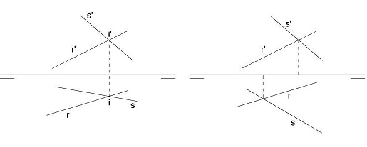
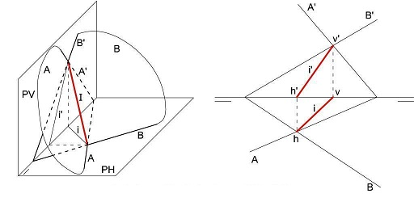
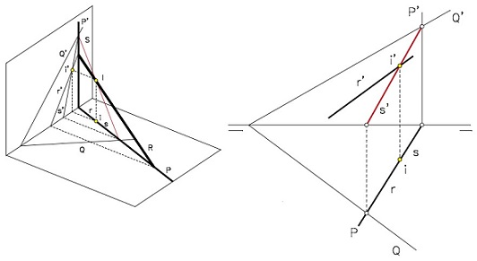

Intersección Recta-Recta
La intersección de 2 rectas en el espacio es un punto.
Esto quiere decir que cuando dos rectas se cortan, existe un único punto en común, es decir, un punto que pertenece a ambas y se llama punto de intersección.

Las dos primeras rectas se cortan, tienen un punto en común; las dos segundas no.
Intersección Plano-Plano
La intersección de 2 planos en el espacio es una recta.
Esta recta es común a ambos planos, es decir, pertenece a ambos planos simultáneamente. Para definir cualquier recta solo necesitamos las 2 trazas de la misma,
que se encuentran en los puntos de corte de las trazas del plano. Si las trazas homónimas de 2 planos son paralelas, la proyección de la recta intersección
también lo será.

Intersección Recta-Plano
La intersección de una recta "r" (no contenida en el plano) con un plano "P" genera un punto. Para hallarla debemos contener la recta en un plano "Q"
y hallar la intersección con el plano "P", lo que crea una recta "s". La intersección de "r" y "s" dará el punto de intersección "I".
